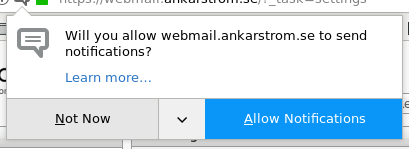

Let’s Replace JavaScript with Something Better
Table of Contents
Abstract and introduction
In light of the Meltdown and Spectre bugs, which allow ill-willed programs access to restricted parts of the computer’s memory, it is time to re-evaluate the position of JavaScript in the holy trinity of front-end development.
JavaScript always was a bad idea, for the simple fact that automatically executing untrusted code from untrusted and unknown sources is a bad idea. Even though the Meltdown and Spectre bugs are no direct fault of JavaScript, it is the only front-end language on the web through which the bugs are exploitable. The fact that the vast majority of JavaScript is non-free software, executed without the user’s knowledge, makes the bugs more dangerous than they would otherwise be.
Furthermore, even without the bugs, JavaScript is increasingly being used in ways that are fundamentally user-hostile – ranging from The Pirate Bay’s non-consensual cryptocurrency mining to advertising companies’ intrusive tracking of users across the web.
This article argues that JavaScript needs to be replaced with a safer alternative, built to provide all the user-friendly functionality of JavaScript, but constructed in a way that makes user-hostile practices impossible – and, finally and crucially, designed to be opt-in.
In addition to making the web safer and more user-friendly, this represents an opportunity to make front-end development more streamlined. In the company of the two declarative languages HTML and CSS, the imperative, all-purpose JavaScript always seemed the odd one out. This is a chance to design a new standard, inspired by the declarative nature of HTML and CSS, providing the desirable and user-friendly functions of JavaScript, while leaving out the dangerous parts – all through a much more pleasant interface.
This article presents one possible solution, in the form of two separate extensions to HTML and CSS respectively. At the same time, it recognizes that it will take much time and effort to come up with an ideal interface, capable of replacing JavaScript. Right now, however, the most important thing is presenting the idea and spreading it.
If you sympathize with the message of this article, please consider contributing by spreading the idea on the internet, even if you disagree with my specific implementation proposals.
I’d love to discuss the ideas on Hacker News or Reddit.
Thanks!
Designing the interface
Separating good from evil
In the design of this new, declarative interface, we need to consider both the good and the bad sides of JavaScript.
JavaScript is a wonderful tool for providing a dynamic way of interacting with a webpage. It is great for changing the style of a page on the fly, for crafting dynamic menus and forms and for updating the page without having to refresh – all in all, it is an indispensible cornerstone of useful web apps.
But there’s a catch. Above all, what’s dangerous about JavaScript is that it is executed without the user’s knowledge or consent. Sure, web developers are aware of it and, one might argue, consent to it by not disabling JavaScript, but the vast majority of users have little to no knowledge of the JavaScript being executed on their machines.
Another big problem are AJAX requests, which likewise often occur without knowledge or consent – potentially sending private, personal information to third parties, or (like certain online newspapers) draining the user’s bandwidth by downloading gigabytes of media in the background.
Even for the developer, JavaScript isn’t a particularily pleasant interface for the things it is designed for. It is constantly upheld as an example of a messy and inconsistent language, so hard to work with that people have developed several languages – CoffeeScript, TypeScript, ClojureScript et al. – that compile to JavaScript, all to avoid actually using JavaScript.
JavaScript is also weird because it is imperative, forcing the programmer to describe the means in which to achieve the desired result, instead of declaratively describing the desired result itself, like in HTML and CSS.
Any interface looking to replace JavaScript must try to retain as many of the good parts as possible, while removing the bad parts. This might sound like a difficult task – and it is – but, as this article will show, it is not impossible. In fact, it is perfectly realizable.
To be clear, what is being presented is not a programming language – it is only the idea of an interface, that might be implemented in the form of a separate language, or perhaps simply as a series of extensions to HTML and CSS.
Fundamental goals and principles
The good parts of JavaScript listed above can be summarized into three pieces of fundamental functionality:
- Dynamic HTTP requests (AJAX)
- Dynamic DOM manipulation
- Dynamic CSS rules
These three goals would need to be met by any serious JavaScript replacement. Moreover, our interface would have to meet them while avoiding any of the bad parts. The two latter pieces of functionality – dynamic generation of local HTML and CSS – cannot be particularily harmful to the user, but, as exemplified earlier, AJAX requests can be.
For this reason, the design of the interface for dynamic HTTP requests must be dictated by a principle of user consent.
Dynamic HTTP requests
As mentioned above, AJAX is an important foundation on which modern web apps are built, but while it can be used for minimizing load times and saving the user’s bandwidth, it can also be abused in user-hostile ways.
Again, this is why the replacement for AJAX must be built on consent. The goal is to provide the same functionality – like dynamically posting form data to the server or retrieving HTML from an external source – but in a way such that it is impossible to achieve without the user’s consent.
In order to adhere to this principle, sites using the proposed interface would only be able to make dynamic requests as a result of a few defined events, that always occur with the user’s knowledge and permission. This means that no requests should be made without the user’s explicit initiation (for example, by clicking a button or pressing a key). If you’re wondering how this is compatible with web apps that rely on automatic updates, that issue is solved in a later section.
In the design of this interface, there are many specific issues that need to be tackled, but first, let’s look at a possible way to implement the more general functionality.
Inspiration: Intercooler
The JavaScript framework Intercooler is an interesting project, much because of the philosophical foundation behind it (see this and this). With a few modifications, it turns out to be very compatible with the ideas presented in this article.
Most importantly, the framework extends HTML with this collection of attributes:
ic-get-fromic-post-toic-put-toic-patch-toic-delete-from
When put on an HTML element, these attributes describe the sort of HTTP request for that element to trigger, and their values describe where to direct that request.
It is easy to see how this would be useful for own ideas about user consent: when the user hovers over an HTML element with one of these attributes, the web browser would display a tooltip warning the user about the attached request.
Events that trigger requests
Such a request is trigged when the element is subjected to a specific DOM event.
The default for most elements is the click event, except for elements designed
for keyboard input from the user, which are trigged by the change event per
default.
There is a long list of further events that can serve as triggers, but click and
change are the only events that are compatible with our principle of user
consent. For any other events, such as those depending on mouse movement or
scrolling, there is no obvious way for the browser to non-intrusively inform the
user of the dynamic request before it is made.
Posting data
Including form data in the request is simple. By default, Intercooler will
include a serialized representation of the nearest parent form, relative to the
triggering element. Additionally, the ic-include attribute allows the developer
to specify through a jQuery selector (very similar to CSS selectors) an
arbitrary element to be serialized and included in the request.
Handling the response
As explained in the Intercooler documentation, the server to which the HTTP
request is made returns a response in the form of HTML. According to the default
behavior, Intercooler then replaces the element triggering the request with the
HTML response. Through the ic-target attribute, the response can be configured
to be put into some other element.
Getting inspired
Intercooler also implements an ic-poll attribute, through which the programmer
can repeat the request on a timer. Also this is a potential source of
inspiration when we attempt to make our AJAX replacement compatible with
automatically repeated AJAX requests.
As you will see in this section, only a small number of changes would be needed in order to make the Intercooler interface compatible with our own ideas about user consent.
Automatically updating a page
The notion of automatically and dynamically updating the content of a webpage seems to go against the notion of user consent, but if we imagine that the interface proposed in this article would replace JavaScript completely, then removing the ability to automatically make repeated HTTP requests would seriously limit the usefulness of modern web apps – just imagine a web-based instant messaging app without automatic updates!
Fortunately, this problem can clearly and easily be solved by designing a standardized API for automatic updates, implemented by the web browsers, much like they have all implemented the Notifications API.
Just like the notifications, automatically repeated HTTP requests would be opt-in; this makes them fully compatible with the principle of user consent. Of course, just like notifications, the user’s choice for each site could optionally be remembered by the browser.
This would mean a web where users wouldn’t have to worry that their news site silently downloads gigabytes in the background, while their favorite web-based messaging service would work without any manual refresh.
When a user visits their favorite social network, their browser would present them with a dialog box, asking them whether to allow the webpage to make repeated HTTP requests in the background. The dialog box would inform the user of what type of request the page wants to make, to which address it would be made and, if applicable, what information (form data, for example) the request would include.
(For an interface based on Intercooler, another good idea would be for the dialog box, when hovered above, to highlight the element into which the response would be put.)
For an idea of what this dialog box would look like, compare the current dialog box for the Notifications API in Firefox:

Examples (with possible syntax)
Let’s put our theory into practice and take a look at what an interface for dynamic HTTP requests could look like.
With Intercooler as inspiration, HTML could be extended with the following attributes:
| Attributes | Purpose |
|---|---|
get, post, put, patch, delete |
Each attribute describes the type of HTTP request, and its value specifies the destination. Elements with any of these attributes display a tooltip, warning about the request, when hovered above. |
trigger-on |
Based on the ic-trigger-on attribute, describing what event should trigger the request, but supporting only the click and change events. |
include |
A partial implementation of ic-include, specifying through a CSS selector an HTML element to be serialized and included in the request. |
prepend, replace, append |
All based on ic-target, but describing more precisely where to put the output of the request, using a CSS selector. |
poll |
Attempts to register an automatically repeated request, via a standardized API for automatic updates. The value specifies the interval. |
The interface would be used in the following way:
<a get="/status-updates" prepend="#status-feed" poll="2s"> Update status feed </a> <div id="status-feed"> <!-- Old status updates --> </div>
As you can see, such an extension of HTML goes a long way. Implementing this small number of attributes is likely sufficient for replacing AJAX in a majority of the cases. For some people, it does require a new way of thinking – but as explained on the Intercooler homepage, this might actually be a better way of thinking, more compatible with the philosophy of REST and, incidentally, that of HTML itself.
That is: not only would this extension to HTML be a replacement for AJAX that is safer, more trustworthy and more user-friendly – it would be developer-friendly as well, because it goes with the grain of the web, unlike JavaScript, which has always gone against it.
Before we move on, I should say that it is also worth looking at the Intercooler interface to the History API as a future source of inspiration.
Dynamic CSS rules
The second goal of this article is to propose an interface for dynamic CSS rules – a common area of use for JavaScript. Modern dynamic web pages need a way to connect the click of a button, or the hovering over an element, to a change in the CSS stylesheet.
It is not obvious how to solve this problem. First, there is the issue of where to solve it – in CSS, in HTML or in an entirely new language?
In analogy with the proposed solution for AJAX without the J in the form of an extension to HTML, I propose that the solution for dynamic CSS “without the J” would best be an extension to CSS itself.
Inspiration: Prolog
I know, I know! What does Prolog have to do with CSS? How could it possibly serve as inspiration for our interface? I will explain.
The truth is that, unlike those that extend HTML, it is quite difficult to find JavaScript projects that aim to extend CSS in a dynamic way. Perhaps this is because HTML is more obviously extensible, thanks to its XML-like syntax, but whatever the reason may be, this leaves us with little inspiration for our own extension to CSS.
We have to find it elsewhere – so let us think about what we need to implement, and whether there are any similar projects we can think of and be inspired by.
An important insight is the need for conditional CSS rules. If we could write a rule, but stipulate that it only be applied under a certain condition, we could eliminate much of the need for JavaScript.
This is where Prolog comes into the picture. It is a logic programming language that is practically built upon conditions. The following code describes under which conditions that the relationship between a grandparent and a grandchild holds:
grandparent_grandchild(Grandparent, Grandchild) :- parent_child(Grandparent, Parent), parent_child(Parent, Grandchild).
That reads: the relation “grandparent-grandchild” holds for any Grandparent and Grandchild – if the relation “parent-child” holds for that Grandparent and some Parent and the “parent-child” relation also holds for that same Parent and the Grandchild.
Imagine if we could do the same with CSS: to stipulate, for example, that the
rule #menu { display: block; } be applied when #menu-button:hover is true. Such
simple conditions don’t really require any Prolog-like implementation, but what
about more advanced conditions?
As an example, let’s take this very page.
Examples (with possible syntax)
Let’s take a piece of JavaScript code and convert it to CSS, extended with a plausible (but by no means set in stone) syntax. The following JavaScript is a sample from this webpage, highlighting the current section in the Table of Contents as the user scrolls through the page:
window.addEventListener('scroll', function(event) { var links = document.querySelectorAll('#text-table-of-contents a') links.forEach(function(link, i) { var anchor = link.getAttribute('href') var section = document.querySelector(anchor) var sectionTop = section.getBoundingClientRect().top if (sectionTop - 10 <= 0) { if (i > 0) links[i-1].classList.remove('active') link.classList.add('active') } else { link.classList.remove('active') } }) })
(The .active CSS class applies rgb(255, 248, 212) as the background and
var(--select-color) as the color.)
Converted to our extended CSS, this is what the equivalent could look like:
#text-table-of-contents a[href="#" $id]:last-match { background: rgb(255, 248, 212); color: var(--select-color); } while [id=$id] { y-rel <= 0; }.
The syntax introduces a couple of things:
| Example | Feature |
|---|---|
$id |
Logic variables – that is, variables local to the current rule that are automatically unified without any explicit assignment by the programmer. Instead, the interpreter figures out from the information provided by the programmer what the value must be. |
while ... |
Conditions – terminated by a period. |
y-rel <= 0 |
Comparisons. Also note the new property y-rel, denoting the element’s current position on the y axis relative to the viewport. |
[href="#" $id] |
Support for concatenation in attribute values – with the same syntax as for property values. |
:last-match |
A new pseudo-class selector selecting the last element matching the entire preceding selector. Compare this to :last-of-type, which only selects the last sibling of the same type. |
The CSS rule above could be put into words in the following way. It applies to
the “:last-match” out of all a elements inside #text-table-of-contents whose
attribute href consists of the concatenation of # and some variable $id – but
only while there exists any element whose id is $id and whose y position,
relative to the viewport, is less than or equal to 0.
Whenever the browser finds any elements matching the selector in our while
condition (that is, is an element that has an id and whose relative y position ≤
0), it will recognize that the $id variable can be equal to the id of either one
of those elements. For all possible values of $id, it will apply our rule – but
remember, our rule concerns only the last match, so it will only be applied to
the last element. While you’re reading this section, that element’s href is
#css-examples.
The complete explanation might be a little long, as I also needed to introduce the concepts behind the syntax, but the actual code is short and understandable, once you have become comfortable with the interface. As demonstrated, it is possible to achieve a whole lot, with only a limited number of additions to the regular CSS syntax. What’s more, the code is clearer than the equivalent JavaScript code, and it is more declarative, describing what the designer wanted and not how they wanted it.
Of course, simpler things would be simpler:
#nav .menu { display: none; } /* default rule */ #nav .menu { display: block; } toggled by #menu-button:active.
In this example, we extend the syntax further with the toggled by condition.
Another plausible condition type would be on, which would enable the rule after
the condition has been met, but would not disable it once the condition ceases
to be met.
Dynamic DOM manipulation
The combination of dynamic HTTP requests and CSS rules go a long way, but what about implementing, say, WYSIWYG editors? They require more than simple CSS styling – they need to dynamically generate new HTML, preferably locally without contacting any server.
Compared to the previous pieces of functionality, client-side HTML generation is less obvious how to implement. Our proposed interface for dynamic HTTP requests, based on Intercooler, deals with inserting externally generated HTML into the current page, but perhaps the problem of locally generated HTML can be solved within the same framework.
In order to narrow the scope of this article, I’ll leave this question open – but, sooner or later, it will need an answer.
In closing: Reason for optimism
This article is already too long, but before I leave, I’d like to say a few words about the future. I’m sure that this article sounds like a pipe dream – a utopic idea doomed to be rejected by the big internet firms that rely on JavaScript as a means of tracking their users and controlling the web.
But there is reason for optimism, because even if we fail to kill JavaScript, the worst thing that could happen is that these ideas result in an interface that can be used as a user-friendly – and developer-friendly! – alternative to traditional JavaScript.
That’s not to say it is impossible to kill JavaScript. It doesn’t need to happen overnight, and it doesn’t need to disappear everywhere – it just needs to be disabled by default, but for this to happen, we first need an alternative. If we start working on a JavaScript implementation of this interface (or one like it), released under a permissive free software license, piece by piece, we could start using it on our own webpages, and people, especially those with LibreJS installed, would already start to benefit.
To reiterate, I believe that a declarative interface like this, based on the idea of user consent, would not only be benificial for the user, but also far more pleasant for the developer to work with than what we currently have.
Congratulations on making it all the way to the end!
If you enjoyed this article, please share it to spread its message. If you’re interested in contributing to the effort of making the web more pleasant both for the user and for the developer, I’d love to discuss the ideas with you on Hacker News, Reddit or anywhere else you’d like.
You can also contact me by e-mail at the following address:
my first name at my last name dot se.
If you’d like to use PGP, my public key is retrievable from the
hkps://pgp.mailbox.org keyserver. To find it, just search for my e-mail address.
Thank you for reading!
– John
Changelog
This article was last updated on January 12th. The title was changed to remove the word “kill”, which sounded a bit harsh. The term “dynamic HTML generation” was changed to “dynamic DOM manipulation”, which better expresses what I meant.